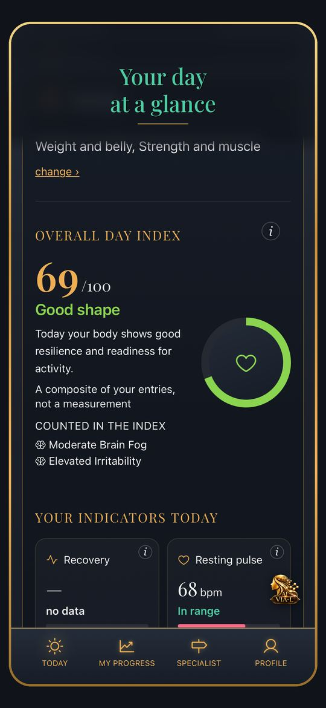
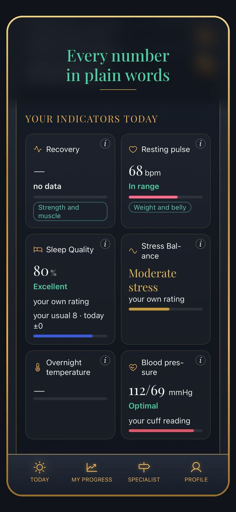
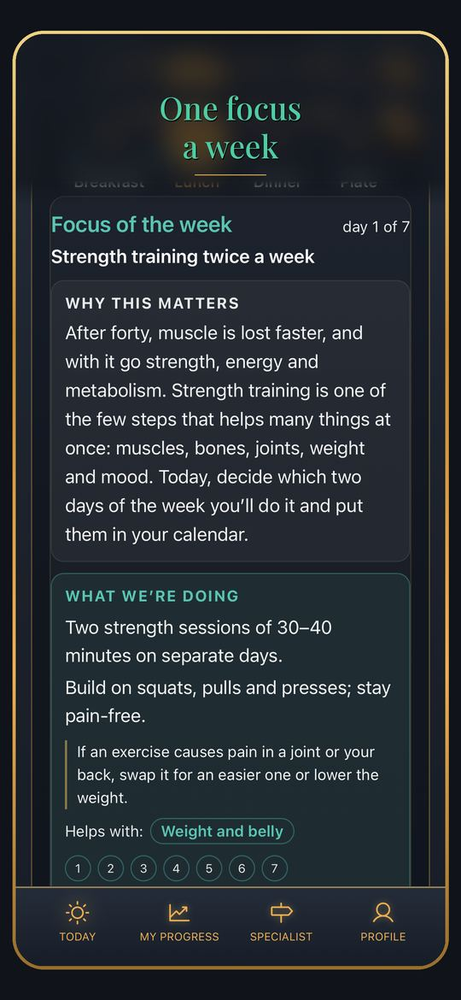
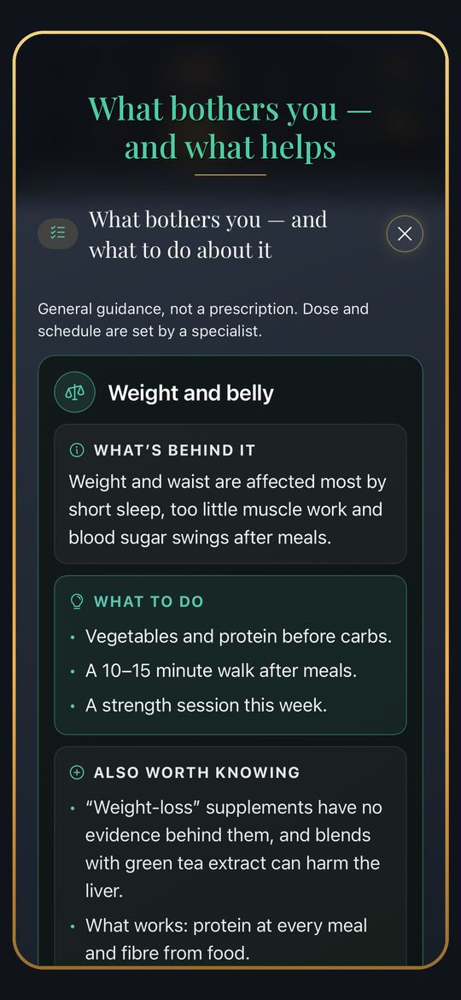
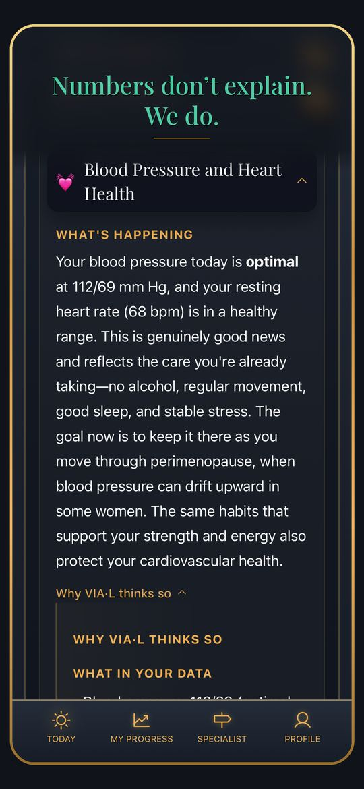
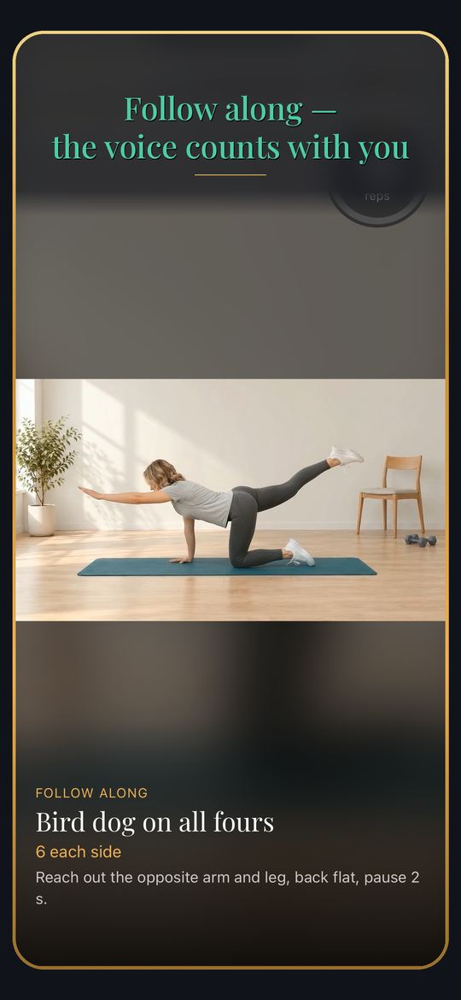
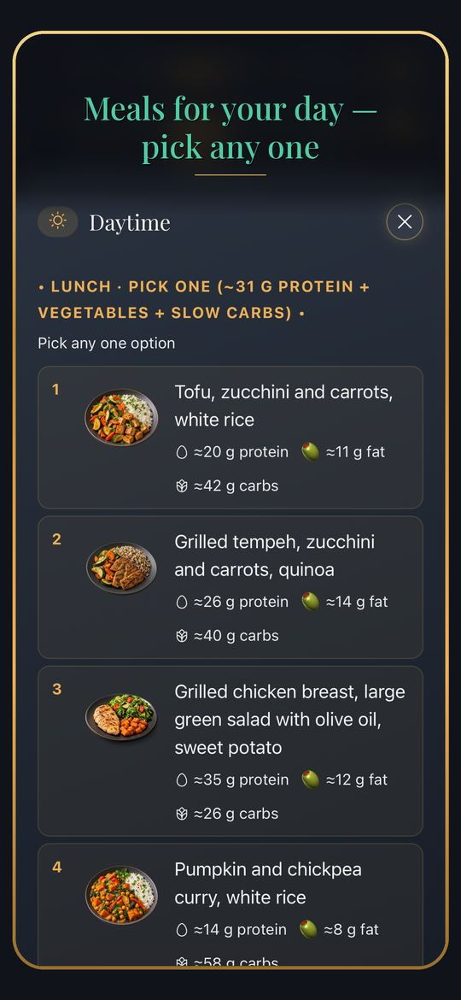
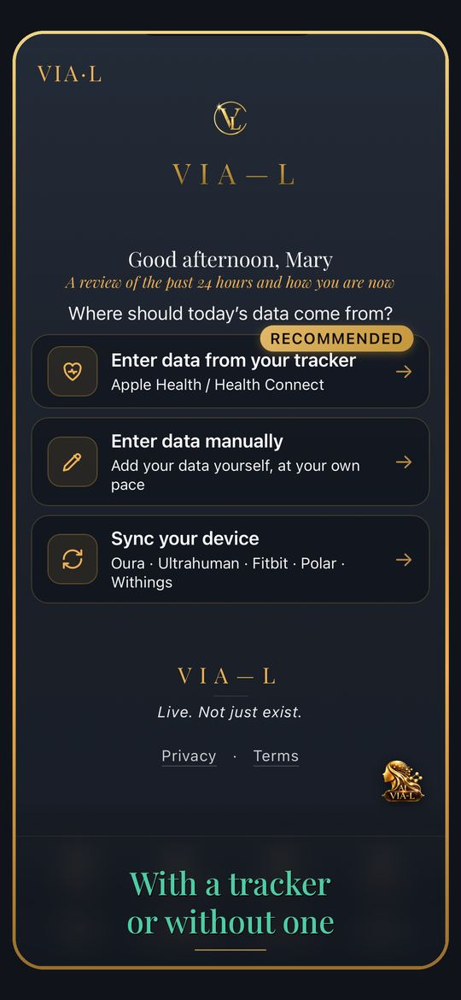
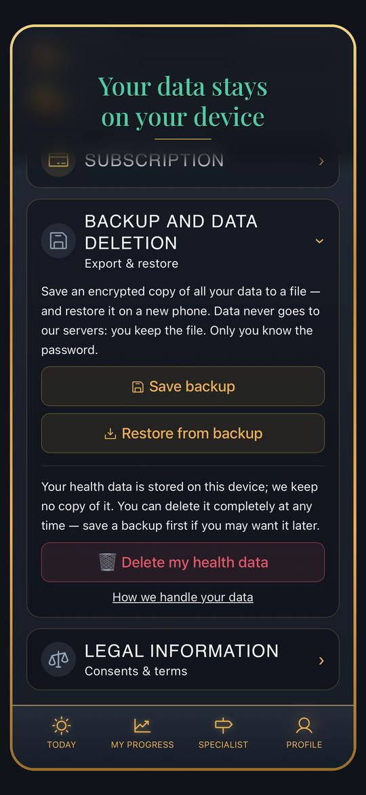

VIA-L — приложение для женщин с 35 и мужчин с 40 лет: сон, энергия, настроение и тело в период гормональных перемен. Простыми словами, по вашим данным — и с проверкой, что помогло.

А в ответ слышите: «Это возраст, потерпите». VIA-L создано, чтобы не терпеть, а понимать и действовать.
Сон, ВСР, пульс в покое, ночная температура, шаги — с кольца, часов или вручную. VIA-L сравнивает их с вашей личной базой, а не с общими нормами, учитывает возраст и фазу цикла, объясняет простыми словами и подсказывает, что сделать сегодня.

Не двадцать советов, а один шаг на неделю — под то, что беспокоит больше всего. Каждый день — короткая карточка: зачем это, как сделать сегодня, что делать, если мешает плохая ночь или выходные. На 7-й день — проверка: ваши цифры до и после и стало ли легче. Дальше — закрепить, усилить или попробовать следующее.

Вы отмечаете, что беспокоит: приливы, сон, туман в голове, вес, суставы, либидо, тазовое дно. На каждую жалобу — карточка: что за этим может стоять и что попробовать — в еде, движении, режиме. Оценка от 0 до 10 показывает, меняется ли жалоба со временем.

Мы — семья из Украины. После войны мы начали всё с нуля в Валенсии. Основатель VIA-L — сертифицированный специалист по перименопаузе (Perry Academy) и нутрициолог. Годами мы видели, как людям после 40 говорят «потерпите», и никто не связывает в одну картину сон, энергию, настроение и тело. VIA-L — наш ответ: понимать, а не терпеть.
Пара минут утром — и понятный план на день.

Идите шагом недели вместе с близким человеком — мужем, подругой, мамой, дочерью. Вы видите шаг и отметки друг друга, но не данные о здоровье. Вместе шаг легче удержать.
«Тренировка дня» подбирается по сну, восстановлению и вчерашней нагрузке — отдельно для женщин и мужчин 40+. Видео с ведущей, таймер, счёт повторов и подсказки голосом. «Мой спорт»: падел, велосипед, футбол и ещё 40 видов — в день игры приложение предложит разминку до и растяжку после.



За рекомендациями VIA-L — почти 1 600 научных работ из мировых медицинских изданий: клинические паттерны перименопаузы, менопаузы и андропаузы и отдельно — движение для женщин и мужчин 40+. Под каждым разбором есть «На чём основано»: название работы, журнал, год и ссылка на оригинал.
VIA-L — приложение о самочувствии и образе жизни. Оно не ставит диагнозы, не лечит и не заменяет врача. Если что-то в самочувствии тревожит — обратитесь к врачу.

7 дней бесплатно, без данных карты. Затем — подписка на месяц или год либо доступ навсегда одной покупкой. Цены — в App Store и Google Play.
Понимать, а не терпеть.